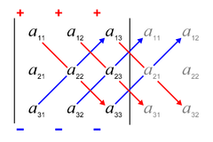

Teorema di Binet
Teorema di Binet- Se A e B sono matrici quadrate dello stesso ordine
det AB = det A ⋅ B
Regola di Sarrus
La Regola di Sarrus permette di ottenere il determinante di una matrice di terzo ordine 3 x 3. Calcoliamo il determinante

mediante il teorema di Laplace, sviluppando il determinante e raggruppando i termini con segno "+" e quelli con segno "-", si ottiene

questa somma può essere ottenuta col seguente procedimento, noto come regola di Sarrus. Si accosta a destra di A la prima e la seconda colonna:
